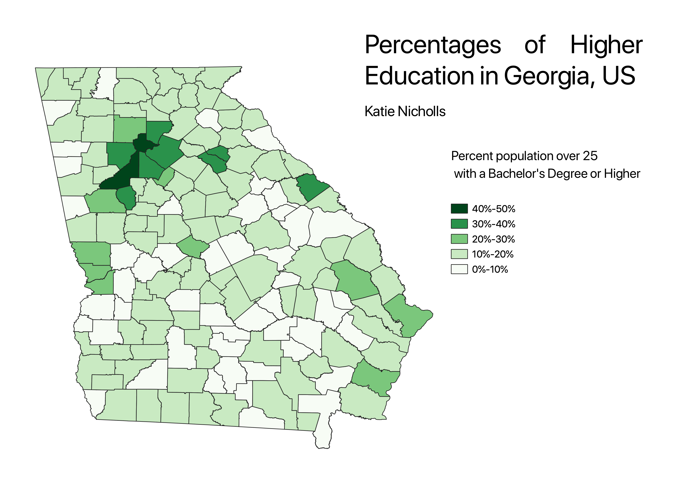

Homework 6: Census data choropleth
Katie Nicholls
Using Data available from the 2000 US census, I made a map that shows the percentage of the population that is above the age of 25 and has a bachelor's degree or higher for each county in the state of Georgia.

Data used for this project
CSV dataset
Link to shapefile